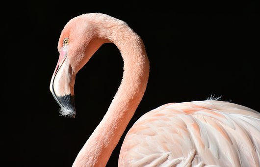

Innerhalb der irdischen Lebensformen bilden die Tiere ein eigenes Reich namens Animalia.[1] Dieses Reich wird heutzutage gleichgesetzt mit dem Taxon der Metazoa.[2] Demzufolge ist die Gruppe der eigentlichen Tiere deckungsgleich mit der Gruppe der vielzelligen Tiere. Nach moderner Auffassung existieren keine einzelligen Tiere, obwohl dies traditionell anders gesehen wurde.[3] Sämtliche Tiere entwickelten sich aus einer gemeinsamen Stammform und sind untereinander näher verwandt als mit allen anderen Lebewesen. Die Tierwelt wird mit dem Begriff der Fauna umschrieben. Die Naturwissenschaft von den Tieren heißt Zoologie. Zu zoologischen Aspekten der Tiere → siehe Hauptartikel: Metazoa Der Mensch wird in der Biologie zu den Tieren gezählt. Bestimmte nicht-naturwissenschaftliche Disziplinen – darunter Rechtswissenschaft und Theologie – rechnen ihn nicht zu ihnen. Das Verhältnis zwischen Tier und Mensch ist Forschungsgegenstand der Tierphilosophie.
Unsere Tiere
| Tier | Vegetarier | Gattung | Lebensraum | Freundlich | Name |
|---|---|---|---|---|---|
| Löwe | nein | Säugetier | Savanne | nein | Leo |
| Hai | nein | Säugetuer | Meer | nein | Kai |
| Affe | ja | Säugetier | Dschungel | ja | Klaus |
| Eisbär | nein | Säugetier | Nordpol | nein | Bernd |
| Krokodil | nein | Reptil | Fluss | nein | Croco |
